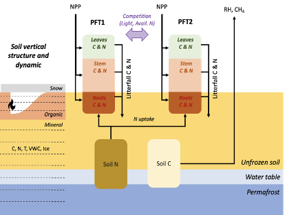

Welcome to dvmdostem’s documentation!
Note
This project is under active development.
DVM-DOS-TEM is a process-based biosphere model, designed to simulate biophysical and biogeochemical processes between the soil, the vegetation and the atmosphere. The model is spatially explicit and focuses on representing carbon and nitrogen cycles in high latitude ecosystems and how they are affected at seasonal (i.e. monthly) to centennial scales by climate, disturbances and biophysical processes such as permafrost, soil thermal and hydrological regimes, snow cover or canopy development.
The code is available on Github: https://github.com/uaf-arctic-eco-modeling/dvm-dos-tem
{kind=link}
Note
What’s with the name? DVM-DOS-TEM is the acronym for the Terrestrial Ecosystem Model (TEM) with Dynamic Vegetation Model (DVM) and Dynamic Organic Soil Model (DOS). Sometimes we write dvmdostem, sometimes we write dvm-dos-tem and sometimes we write DVM-DOS-TEM. These are all the same thing. The order is always the same, but sometimes we use capitals and sometimes lower case, sometimes with hyphens and sometimes without. This is a fluke of history. In some cases it looks better capitalized, sometimes it looks better lower case. The repository ended up with hyphens in the name, but the compiled binary executable does not have hyphens.
Contents
- 1. Model Overview
- 2. Running
- 3. Dev Info
- 4. SA and UQ
- 5. Command Cheat Sheet
- 6. Common Project Acronyms
- 7. Manual Calibration